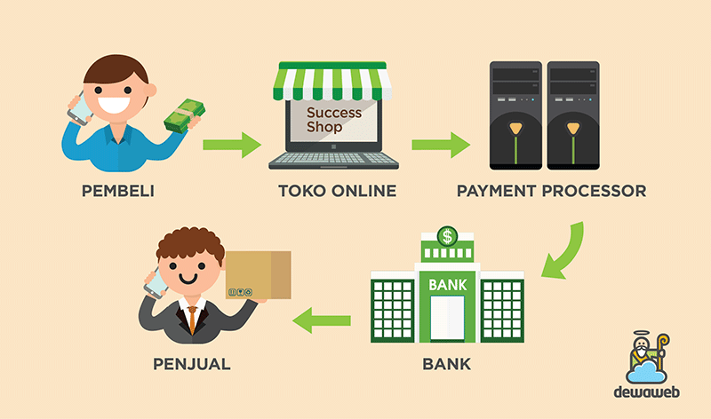
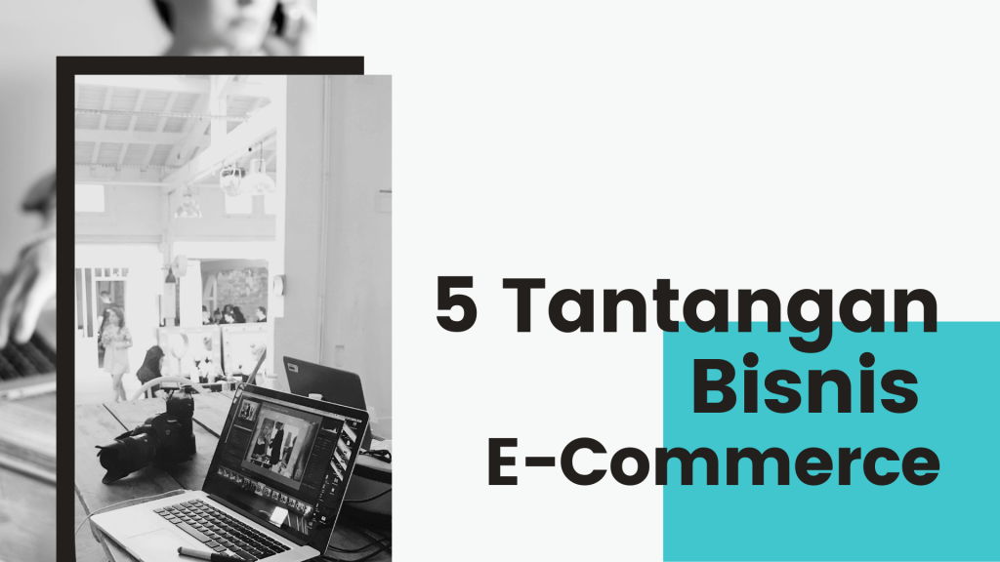

E-Commerce
TukangSayur
Nama Anggota :
Steven Luis [181110026]
Erwin [181110255]
Willy Layanto [181112019]
Pengertian E-Commerce
E-Commerce merupakan jasa pembelian, penjualan, penyebaran barang dan jasa pada
sistem elektronik melalui internet, televisi, dan jaringan komputer lainnya.
Sistem Kerja E-Commerce

Mekanisme kerja dari E-Commerce mengandalkan transaksi online yang
dimulai dengan adanya penawaran suatu produk tertentu oleh penjual
di suatu website melalui server yang dituju. Apabila konsumen melakukan
pembelian, maka konsumen tersebut akan mengisi order mail yang telah
disediakan oleh pihak penjual.
Manfaat dari E-Commerce :
Menghemat waktu untuk meningkatkan bisnis
Lintas wilayah yang lebih mudah
Tidak memerlukan modal besar
Memiliki waktu yang lebih banyak dan fleksibiltas.
Peluang untuk berkembang menjadi bisnis yang lebih besar
Pemasaran produk yang lebih mudah
Metode pembayaran yang lebih praktis
Mudah mencatat historytransaksi
Jenis-Jenis E-Commerce
Business to Business (B2B)
Business to Consumers (B2C)
Consumer to Consumer (C2C)
Consumer to Business (C2B)
Online to Offline (O2O)
Consumer to Administration (C2A)
Business to Public Administration (B2A)
Tantangan E-Commerce :

Resiko penipuan yang dapat menimbulkan kerugian
Persaingan dengan kompetitor yang ketat
Managemen keuangan yang lebih banyak dikontrol
Memahami karateristik pembeli
Mengikuti pengembangan teknologi yang berlangsung pesat
Terima kasih
_______________________
Ada pertanyaan?